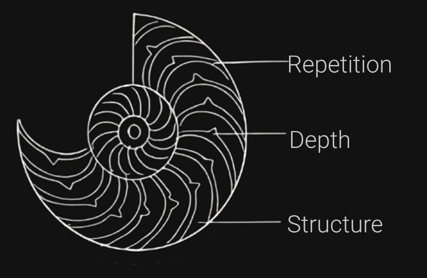
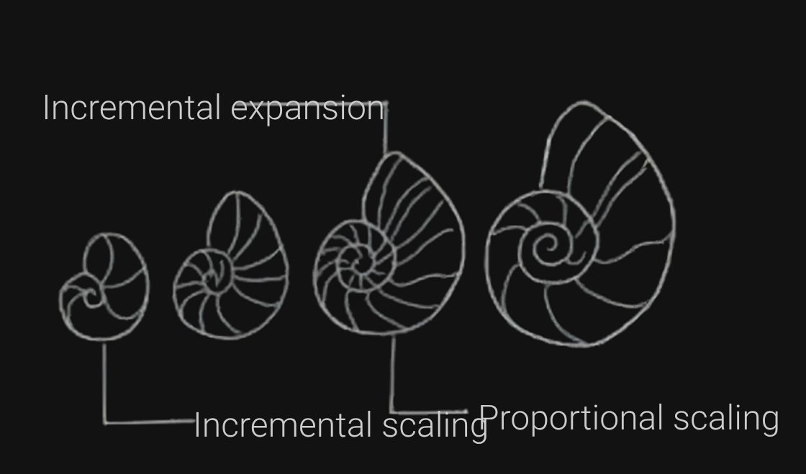
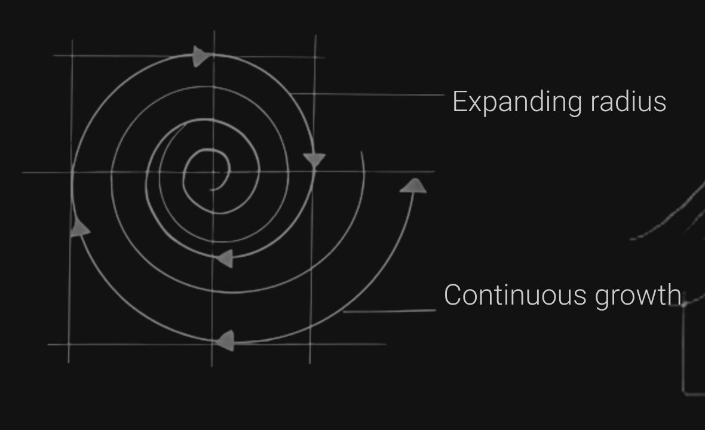
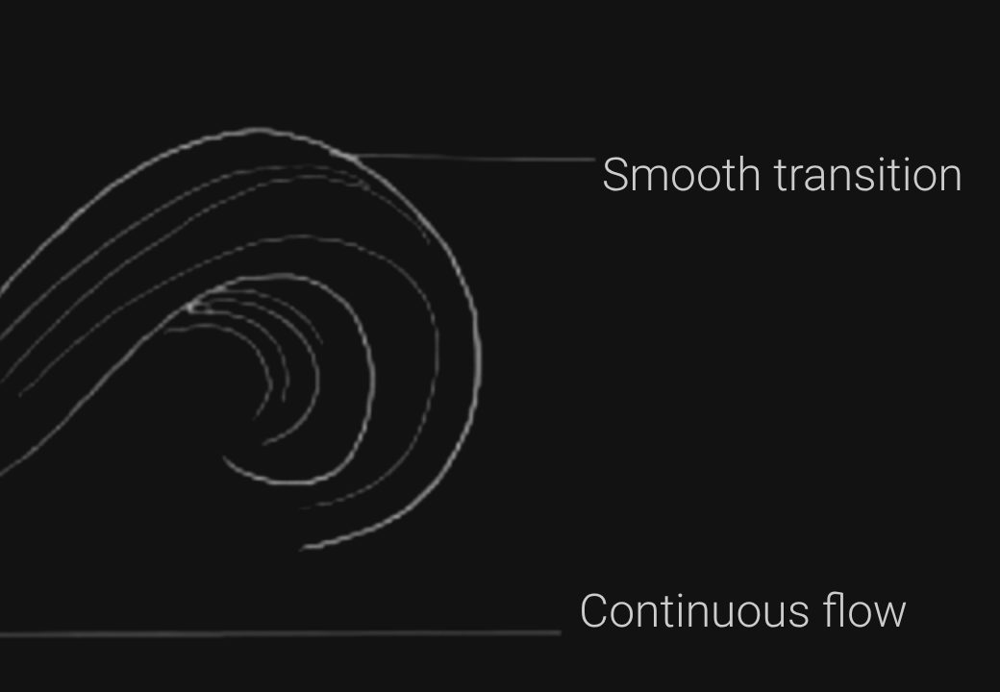
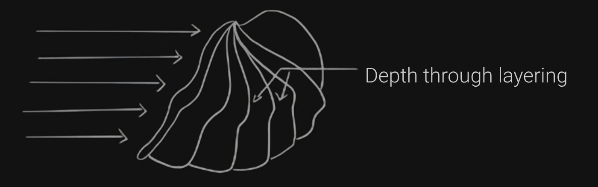
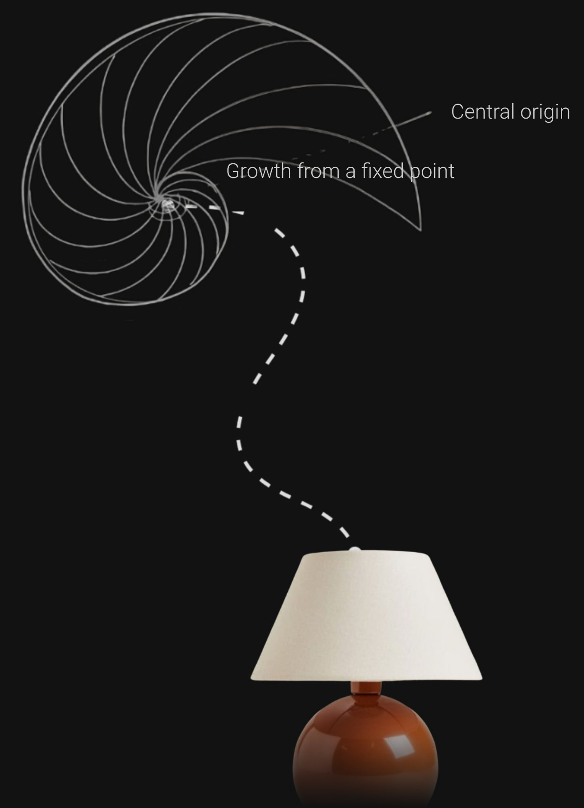
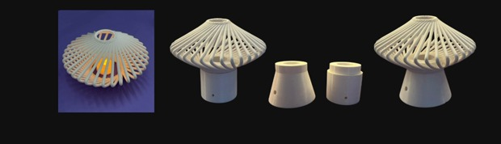

NAUTILUME


Repetition
Incremental expansion
Depth
Structure
Proportional scaling
Incremental scaling
Expanding radius
Smooth transition
Continuous growth

Continuous flow
Depth through layering
Central origin
Growth from a fixed point


Computational Form in Light
Inspired by the natural geometry of the nautilus shell, this project explores parametric lighting through controlled curves and rotations, translating organic growth into a soft interplay of light and shadow.
My Focus
· Biomimicry Research · Computational Form Development · Parametric Design · Lighting Exploration · 3D Visualization
Duration — 1 week | Year — 2026
Tools used
Parametric design employs computational logic to generate fluid, adaptive forms, where relationships drive continuous evolution. Reflecting patterns inherent in nature, it shifts design from static geometry to responsive, interconnected form.
This direction led to the nautilus shell as a primary form reference.

Nautilus shell






The beach has always felt like home to me. Growing up around sandy feet and bags full of seashells, I was drawn to their forms — each one unique, each one holding a quiet story of the ocean.
Table lamp
Inspired by the nautilus shell’s spiral growth and layered geometry, the design translates these principles into a lighting form. The intent was to balance structure and openness, allowing light to diffuse through continuous layers.
IDEATION
The ideation investigates spiral-based forms through rapid sketch explorations of structure, layering, and light. The process evolves from abstract variations to a refined and cohesive design direction.


Quick mock ups - 3d Printed
